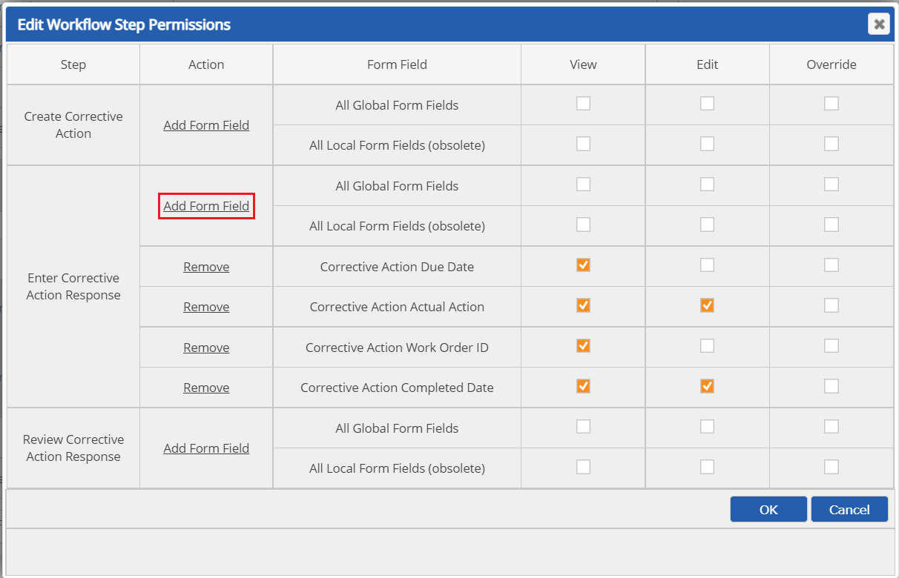
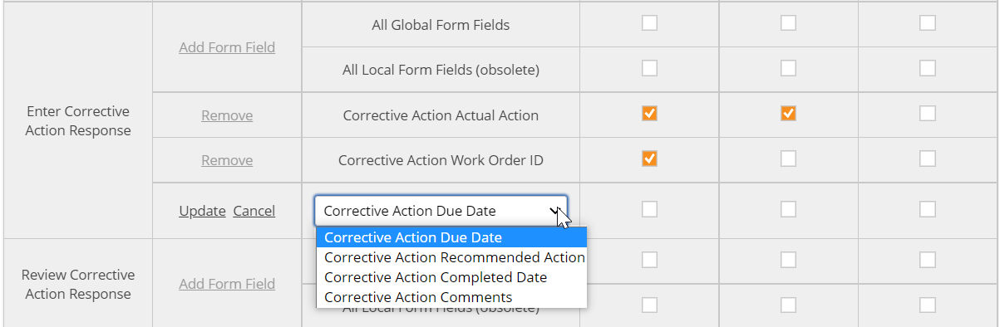
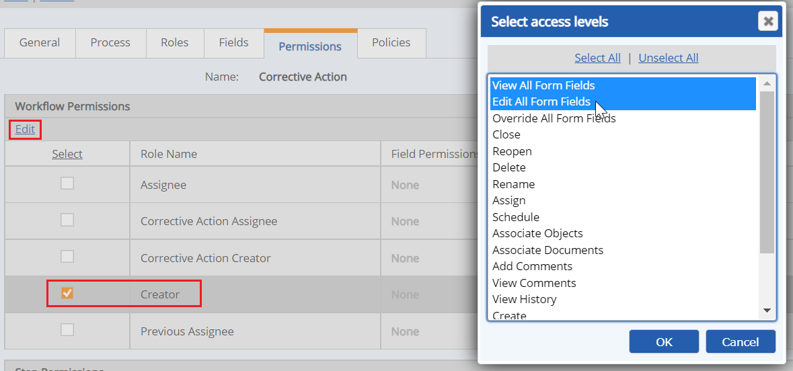

Field Permissions define the view or edit functions that the users associated with a Role can perform on the form fields on each step.
Form fields are of two types:
Local fields have a separate value for each step. The same field may be used on different steps, but each step has a distinct value for the field. View or edit permissions may be granted at the step level.
Global fields have one value for the whole workflow, regardless of how many step forms on which it is used. View or edit permissions may be granted at any step. The fields with global scope are identified on the Fields tab.
You may grant field permissions at the step level or at the workflow level. Granting field permissions at the workflow level is equivalent to assigning the same field permissions to all steps at the step level.
The Permission tab of the workflow type shows the Roles associated with the workflow, with any permissions already granted.
To grant field permissions at the step level:
In the Step Permissions section, check the box for the role whose permissions you want to edit, then click Edit.
The Step Permissions table in the popup window shows each step in the workflow. View, Edit or Override permission is available for all global and all local fields.
Edit allows the Role to edit the value of the field on the current step. Override allows the Role to edit the value of the field whether or not the step is the current step.

Check the permissions for each step to grant permission to the Role on that step.
If you want to grant permission to only specific fields for a step, rather than all fields, click Add Form Field in the step row.
A dropdown list shows the fields on the form for that step. Select a field from the list, then check the permission to grant. Click Update.

To add another field, click Add Field again and choose the next field. Select the permission to grant and click Update.
You need to grant permissions to each field you want to be visible to that Role on that step. Any field for which no permissions are granted will be hidden on the form.
To grant step permissions at the workflow level:
In the popup window, select the field permissions you want to grant: View All Fields, Edit All Fields, or Override All Fields.
The same permission will be granted to all fields at all steps of the workflow.

The following table shows the field permissions that may be granted and the related functions.
|
Step Level Permissions |
Permitted Functions for Role Members |
|---|---|
|
View All Local Fields |
May view all local form fields on the Step |
|
View All Global Fields |
May view all global form fields on the Step |
|
Edit All Local Fields |
May edit all local form fields on the Step |
|
Edit All Global Fields |
May edit all global form fields on the Step |
|
Override All Local Fields |
May override all local form fields, whether or not the Step is the current Step |
|
Override All Global Fields |
May override all global form fields, whether or not the Step is the current Step |
|
Workflow Level Field Permissions |
|
|
View All Fields |
May view all local and global form fields on all Steps. This is the same as granting View All Local Fields and View all Global Fields on every step in Step Permissions. |
|
Edit All Fields |
May edit all local and global form fields on any Step, if the Step is the current Step. This is the same as granting Edit All Local Fields and Edit All Global Fields on every step in Step Permissions. |
|
Override All Fields |
May edit all local and global form fields on any Step, whether or not the Step is the current Step. This is the same as granting Override All Local Fields and Override All Global Fields for every step in Step Permissions. |